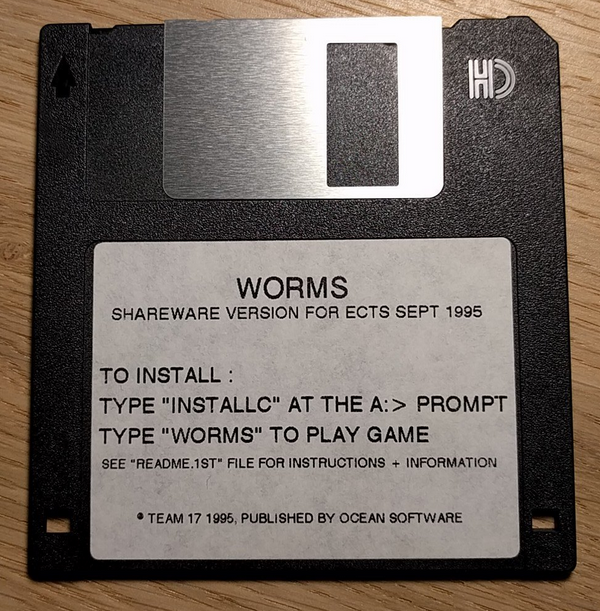
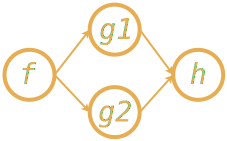

Ben Deane / @ben_deane
CppCon / Tuesday September 25th, 2018
First: Operators I'm Not Talking About
- conversions (e.g.
operator int()) - user-defined literals (e.g.
operator ""_km) operator newandoperator delete- assignment
I'll mostly be talking about "mathematical" operators (arithmetic, bitwise, equality, etc).
Operators in C++
They just aren't very good. Things we can't control:
- name
- precedence
- associativity
- arity
- fixity
- evaluation semantics
Motivation
The obvious first question:
Why should we use operators at all?
Why?
- for concision?
- for performance?
- to take advantage of ADL?
- because we can?
- because we have to (equality/ordering)?
Why?
Because operators convey meaning about types that named functions don't.
a + b + c;
Say this another way…
"It is probably wise to use operator overloading primarily to mimic conventional use of operators."
The History Part
Or, counterpoint to "stick to convention".
Because things haven't always been this way.

I 3D-printed a Save Icon!

What is "convention" in history?
What we may think of as "axiomatic" - mathematical notation -
is actually changing all the time.
- Nicole Oresme
- Robert Recorde
- William Oughtred
- Gottfried Wilhelm Leibniz
What's the answer?
355 / 113 = ?
Are you sure?
What do these mean?
% ^ ~ |
These are really arbitrary and only a little older than me.
Revised Guideline
When defining our own operators, we are well-advised to stick to conventional
or intuitive properties, where they exist.
Corollary: study history.
A History of Mathematical Notations by Florian Cajori
Operator overloading advice
"When in doubt, do as the
ints do."
Operator overloading
When in doubt, do what operator+ does?
operator+ Properties
| Property | Math(s) | C++ |
|---|---|---|
Closed |
✔ |
✗ (overflow) |
Associative |
✔ |
✗ (floating point) |
Commutative |
✔ |
✗ (strings) |
Has Identity |
✔ |
✔ ✔(+0.0, -0.0!) |
Operators in Compiler History
(from https://jeffreykegler.github.io/personal/timeline_v3)1956: The IT Compiler
"…the first really useful compiler."
But it didn't have operator precedence as we know it today.
"The lack of operator priority … in the IT language was the most frequent single cause of errors by the users of that compiler."
Why?
Because operators convey meaning that names don't.
- associativity/commutativity
- precedence
- distributive law
Because operators allow concision/readability.
Because operators allow expressions to be manipulated.
Mathematical Principles
Which mathematical conventions should we follow, then?
A selection, in approximate order of importance…
Probably the most important
- Logical contrariety of
==and!=
Break this one at your peril!
bool operator==(const T& x, const T& y) noexcept { ... } bool operator!=(const T& x, const T& y) noexcept { return !(x==y); }
Very important
- Associativity of
+and*
assert((a + b) + c == a + (b + c));
Almost all mathematical objects we work with in C++ obey this, so if you violate this, your code could be very surprising.
Still fairly important
- Law of the excluded middle
Either a given proposition is true, or its negation is true.
tertium non datur
assert(a > b || a <= b);
Mostly true (but notably not for float).
Nice to have
- Commutativity of
+
I think it's probably too late to "fix" std::string by giving it operator*.
(ಠ_ಠ at std::reduce)
Nice to have
- Distribution of
*over+
This (or something similar) helps users of your code to manipulate expressions.
Can go either way
- Closedness of
+
But if you don't have closure over your type, you had better know why.
Affine Spaces
Affine Spaces
Types and operators working together as a team.
- a set of points (values of type 1)
- difference between two points is a vector (value of type 2)
- operations that relate points to vectors
- no need for an origin
chrono: time_point and duration
In chrono, time is a one-dimensional affine space.
time_pointis a pointdurationis a vector
chrono as an affine space
Thinking of it this way helps us to define the operations that make sense.
time_point operator+(time_point, duration); time_point operator-(time_point, duration); duration operator-(time_point, time_point); duration operator+(duration, duration); duration operator-(duration, duration); duration operator*(duration, rep); duration operator/(duration, rep); duration operator%(duration, duration);
Why Overload Conventionally?
Helps users with:
- intuition
- manipulation
- properties
Why Overload Conventionally?
Helps implementers/designers identify:
- a complete basis
- minimality vs convenience
- efficiency
- in general, the space of types and operations
Why Be Conventional?
It helps us take advantage of compositionality built into
the standard library and the language.
std::accumulate,std::reduce, etc- fold expressions
New stuff in C++17
Fold expressions
In C++17, fold expressions fold (reduce) a parameter pack over a binary operator.
template <typename... Args> auto output(Args&&... args) { return (std::cout << ... << args); }
Fold expressions
Choosing left- or right- fold is usually about commutativity rather than associativity.
template <typename Matrix, typename... Args> auto multiply_on_right(Matrix&& m, Args&&... args) { return (m * ... * args); } template <typename Matrix, typename... Args> auto multiply_on_left(Matrix&& m, Args&&... args) { return (args * ... * m); }
Fold expressions
Unary fold expressions also exist…
But are mostly useful with operators that shouldn't really be overloaded.
New evaluation semantics
C++17 changed semantics for overloading:
operator&&operator||operator,
Evaluation order guarantees P0145
Operators in C++17
- Associativity is important for leveraging fold expressions
- Non-commutativity affects the choice of fold
- You probably still don't want to mess with
&&||and,
Right-fold, old-style
Something like this.
// Assuming we have a class Foo with a non-commutative operation struct right_multiplies { template <typename T> T operator()(T t1, T t2) const { return operation(t2, t1); } }; template <template <class> typename Container = std::initializer_list> Foo right_fold_old(Foo init, Container<Foo> c) { return std::accumulate(std::crbegin(c), std::crend(c), init, right_multiplies{}); } auto sum = right_fold_old(foo_init, {foo1, foo2, foo3});
Right-fold, new-style
Something like this.
// Assuming we have a class Foo with a non-commutative operator* template <typename... Args> Foo right_fold_new(Foo init, Args&&... args) { return (args * ... * init); } auto sum = right_fold_new(foo_init, foo1, foo2, foo3);
New in C++20
We get a whole new operator!
The three-way comparison operator.
operator<=>
AKA "the spaceship operator". [expr.spaceship]
operator<=> 101
#include <compare> to get 5 types [cmp.categories]:
std::strong_equalitystd::weak_equalitystd::strong_orderingstd::weak_orderingstd::partial_ordering
A call to operator<=> returns a value of one of these types.
Equality
std::strong_equality means values that are equal are indistinguishable.
std::strong_equality operator<=>(std::type_info a, std::type_info b);
std::weak_equality means values that are equivalent may be distinguishable.
std::weak_equality operator<=>(std::filesystem::path a, std::filesystem::path b);
Ordering
A total ordering means exactly one of the following is true:
- a > b
- a == b
- a < b
std::strong_ordering is a total ordering with substitutability.
template <typename T> std::strong_ordering operator<=>(typename std::vector<T>::iterator a, typename std::vector<T>::iterator b);
std::weak_ordering is a total ordering without substitutability.
std::weak_ordering operator<=>(const CIString& a, const CIString& b);
Ordering
std::partial_ordering means it's possible that none of the following is true:
- a > b
- a == b
- a < b
std::partial_ordering operator<=>(float a, float b);
Case study: Last year's SCM Challenge
Challenge: write a case insensitive string class that implements
all 6 comparison operations.
struct ci_compare_equal { bool operator()(char x, char y) const { return std::toupper(x) == std::toupper(y); } }; struct ci_compare_less { bool operator()(char x, char y) const { return std::toupper(x) < std::toupper(y); } }; inline bool operator==(const CIString& x, const CIString& y) { return std::equal(x.s.cbegin(), x.s.cend(), y.s.cbegin(), y.s.cend(), ci_compare_equal{}); } inline bool operator<(const CIString& x, const CIString& y) { return std::lexicographical_compare(x.s.cbegin(), x.s.cend(), y.s.cbegin(), y.s.cend(), ci_compare_less{}); }
Case study - continued
inline bool operator!=(const CIString& x, const CIString& y) { return !(x == y); } inline bool operator>(const CIString& x, const CIString& y) { return y < x; } inline bool operator<=(const CIString& x, const CIString& y) { return !(y < x); } inline bool operator>=(const CIString& x, const CIString& y) { return !(x < y); }
So how did this change with C++20?
inline std::weak_ordering operator<=>(const CIString& x, const CIString& y) { return std::lexicographical_compare_3way( x.s.cbegin(), x.s.cend(), y.s.cbegin(), y.s.cend(), [] (char x, char y) { const auto diff = std::toupper(x) - std::toupper(y); return diff < 0 ? std::weak_ordering::less : diff > 0 ? std::weak_ordering::greater : std::weak_ordering::equivalent; }); }
operator<=> guidelines
It's too new to switch to it yet (obviously - it's C++20).
- library support is only just being figured out
- no real implementations yet
- issues with generic code/composition have to be worked out
- perf pitfalls with sequence containers + naive usage
Straying from Convention
"When I use a word," Humpty Dumpty said, in rather a scornful tone, "it means just what I choose it to mean—neither more nor less." "The question is," said Alice, "whether you can make words mean so many different things." "The question is," said Humpty Dumpty, "which is to be master—that's all.”
DSLs
The primary use of a DSL is in the construction of (otherwise) complex objects.
- terser
- simpler
- manipulable
The use of template expressions may also provide performance gains.
UDLs are a natural fit for DSLs.
Readability
std::vector<int> v; v.reserve(5); v.push_back(1); v.push_back(2); v.push_back(3); v.push_back(4); v.push_back(5);
vs
std::vector<int> v{1,2,3,4,5};
chrono dates
A DSL with one operator and two UDLs.
using namespace std::chrono; constexpr auto today_us = September/25/2018; constexpr auto today_uk = 25d/September/2018; constexpr auto today = 2018y/September/25;
filesystem::path
A DSL with one operator.
using namespace std::filesystem; auto home_prefix = path{"/home"}; auto my_home_dir = home_prefix / "bdeane";
[Boost.]SML
(Disclaimer: SML isn't a Boost library)
struct tcp_release final { auto operator()() const { using namespace sml; return make_transition_table( *"established"_s + event<release> / send_fin = "fin wait 1"_s, "fin wait 1"_s + event<ack> [ is_valid ] = "fin wait 2"_s, "fin wait 2"_s + event<fin> [ is_valid ] / send_ack = "timed wait"_s, "timed wait"_s + event<timeout> = X ); } };
Operators and Monads
What's the biggest problem with monads?
- understanding them?
- explaining them?
- CT wonks?
- the sudden urge to try to make everything monadic?
The main problem with monads
In C++, operator>>= is right associative!
What operator overloads are we going to use is we want to compose things monadically?
Operator overloading and futures
// imaginary-ish code my_future<A> f(X); my_future<B> g1(A); my_future<C> g2(A); my_future<D> h(B, C);
Operator Overloading and Futures
auto fut = f(); auto split1 = fut.then(g1); auto split2 = fut.then(g2); auto fut2 = when_all(split1, split2).then(h);
auto fut = f() >= (g1 & g2) >= h;
Operator overloading can clarify the computational structure when combining futures/promises.
Mechanics
Free or not?
struct Foo { Foo operator+(const Foo& other); };
struct Foo { }; Foo operator+(const Foo& x, const Foo& y);
Free and non-free
struct Foo { Foo& operator+=(const Foo& other); }; Foo operator+(const Foo& x, const Foo& y) { Foo r{x}; r += y; return r; }
Don't forget qualifiers
Operators are functions, so you should apply all the normal rules of writing functions.
constexprconstnoexcept- parameter types
- return type
Guidelines Redux
Let's recap.
When to use operator overloading
Use operators when:
- you have a natural binary function that combines your types
- your types obey mathematical principles (associativity, etc)
- you want users to be able to manipulate expressions
- you want to make complex construction easier
- you want users to intuit properties of your types
When not to use operator overloading
Don't use (only) operators when:
- you can provide better perf with an n-ary function
- they aren't yet ready for primetime (
operator<=>)
Don't
- break contrariety of
operator==andoperator!= - break associativity
- be afraid to overload just one operator, if it makes sense (
operator/) - overload
operator&&operator||operator,even with P0145 - pick weird operators if your type is mathematical
Do
- use conventions other than mathematical ones
- consider distinguishing your types to leverage affine spaces
- use operators for non-commutative operations to leverage fold expressions
- use UDLs as a counterpart to operators to help with construction
- provide the whole set of related operators if you provide one
Thank you
Questions?
Comments thinly disguised as questions?
Pitchforks & torches?